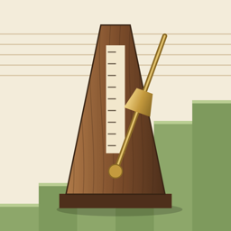

だんだん速くなるメトロノーム
テンポを自動で少しずつ上げて練習できる、木の振り子のメトロノーム。iPhone と iPad のアプリです。
「60から100まで、4小節ごとに4ずつ上げる」と決めると、テンポが階段のように上がっていきます。止めたところのテンポが「到達」として残り、次は前回の続きから練習できます。
- 練習の階段：はじめ・目標・上げる幅・何小節ごとかを決めると、テンポが自動で上がります。「いま 84 → 次は 86（あと 4 小節）」と、次に上がるまでが分かります
- 到達の記録：止めたところのテンポと小節の数を残し、いちばん上まで行った記録も出します
- 曲の地図：曲を区切り（前奏・Aメロ・サビなど）に分け、区切りごとの拍子とテンポを通しで鳴らします。区切りを押すと、そこから鳴らします
- ふつうのメトロノーム：テンポ 30〜300、タップでテンポ、拍子、1拍目を強く、拍の中の刻み（8分・3連・16分）、4つの音
- 音は少し先まで予約して鳴らすので、画面を動かしても広告が入れ替わっても途切れません。消音スイッチが入っていても鳴ります
- 登録・課金はありません。インターネットにつながっていなくても使えます。画面のいちばん下に小さな広告が出ます（画面いっぱいの広告・動画の広告は出ません）